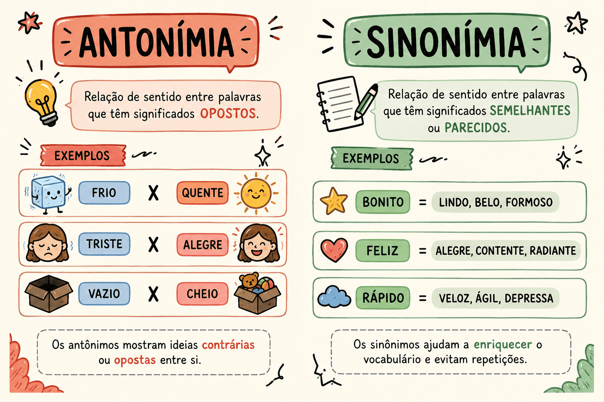

Sinonímia e Antonímia no Texto: 15 Questões para o PAES UEMA 2027
As questões de sinonímia, antonímia e substituição vocabular no PAES UEMA 2027 testam o seu domínio sobre a riqueza do léxico da língua portuguesa. O vestibular frequentemente exige que o candidato substitua palavras ou expressões em um trecho literário sem que haja alteração relevante de sentido.
Nesta página, revisaremos como o contexto determina a escolha da palavra exata e como a polissemia influencia as relações de sinonímia e antonímia. Em seguida, você poderá resolver 15 questões inéditas focadas na substituição vocabular, utilizando fragmentos das obras obrigatórias: Crônicas de Lucy Teixeira[cite: 1], Infância (Graciliano Ramos)[cite: 2] e Meu Livro de Cordel (Cora Coralina)[cite: 3]. O material conta com correção automática e gabarito comentado.

Relações de Significado entre as Palavras
Para não cair em pegadinhas nas provas, é preciso entender que a sinonímia perfeita (quando duas palavras têm exatamente o mesmo significado em 100% dos casos) praticamente não existe. A substituição depende do tom, do registro e do contexto da obra.
Sinonímia
É a relação de aproximação de sentido entre duas ou mais palavras. Quando a banca pede a substituição de um termo, você deve procurar aquele que se encaixe perfeitamente no período sem gerar incoerência ou alterar a intenção do autor.
Exemplo: Ela era uma menina tranquila = Ela era uma menina calma.
Antonímia
É a relação de oposição de sentido entre duas palavras. Fique atento às questões que pedem o antônimo contextual de uma palavra, pois o oposto exigido não será necessariamente o primeiro que vem à mente.
Exemplo: O tempo estava seco. Antônimo contextual: O tempo estava úmido.
Em resumo: Substituição Vocabular
- Foco no contexto: Um sinônimo de dicionário pode não servir para a frase da prova. A palavra "bater", por exemplo, pode ser substituída por "espancar" ou por "derrotar", dependendo do contexto.
- Atenção aos prefixos: Muitos antônimos são formados pelo acréscimo de prefixos de negação (in-, des-, a-). Exemplo: fiel / infiel; fazer / desfazer.
Estratégia para o PAES UEMA
Nas questões de substituição vocabular, substitua a palavra destacada por cada uma das alternativas diretamente na frase original e leia mentalmente. Elimine aquelas que alteram a classe gramatical, criam absurdos lógicos ou quebram o nível de formalidade estabelecido pelo autor.
Questões de Substituição Vocabular para o PAES UEMA 2027
15 questões inéditas baseadas nas obras obrigatórias
Questão 1 — Sinonímia (Contexto: Crônicas de Lucy Teixeira)
"...tudo continua ignorado uma vez que esta outra modalidade de força propulsiva traz consequências milagrosas exigindo o completo sigilo de seu inventor..."[cite: 1]
Sem alteração relevante de sentido, a palavra destacada poderia ser substituída no texto por[cite: 1]:
Questão 2 — Sinonímia (Contexto: Crônicas de Lucy Teixeira)
"...dotando-nos de uma plasticidade psicológica maior do que a que já nos assegura a própria base étnica."[cite: 1]
Considerando o contexto do trecho acima[cite: 1], a palavra "plasticidade" pode ser corretamente substituída por:
Questão 3 — Antonímia (Contexto: Crônicas de Lucy Teixeira)
"A passiva obediência dos objetos humildes."[cite: 1]
Assinale a alternativa que apresenta o antônimo exato da palavra destacada no fragmento acima[cite: 1]:
Questão 4 — Sinonímia (Contexto: Crônicas de Lucy Teixeira)
"...não ignorava a timidez e se sentia como um menino diante de uma porta fechada."[cite: 1]
No texto, a palavra "timidez" poderia ser substituída, sem prejuízo ao sentido da crônica[cite: 1], por:
Questão 5 — Antonímia (Contexto: Crônicas de Lucy Teixeira)
"Os pássaros que alto veem não trazem para o mar ou para a terra a ausência da luz meridiana."[cite: 1]
A palavra destacada exprime a ideia de falta ou privação[cite: 1]. Qual das palavras a seguir funciona como seu antônimo direto?
Questão 6 — Sinonímia (Contexto: Infância)
"A recordação de uma hora ou de alguns minutos longínquos não me faz supor que a minha cabeça fosse boa."[cite: 2]
A palavra destacada evidencia o distanciamento temporal das lembranças do narrador[cite: 2]. Ela poderia ser substituída adequadamente por:
Questão 7 — Substituição vocabular (Contexto: Infância)
"As nascentes secavam, o gado se finava no carrapato e na morrinha."[cite: 2]
A palavra "morrinha", típica do vocabulário sertanejo e nordestino presente na obra de Graciliano[cite: 2], pode ser substituída sem perda semântica por:
Questão 8 — Antonímia (Contexto: Infância)
"O homem agreste murmurava uma confissão lamentosa..."[cite: 2]
A palavra "agreste" qualifica o pai do menino e o ambiente sertanejo[cite: 2]. Assinale a alternativa que traz um antônimo para essa palavra.
Questão 9 — Sinonímia (Contexto: Infância)
"E sons estranhos também surgiram: letras, sílabas, palavras misteriosas."[cite: 2]
O narrador relembra seu estranhamento inicial com a alfabetização[cite: 2]. O adjetivo destacado pode ser substituído de forma correta por:
Questão 10 — Substituição vocabular (Contexto: Infância)
"Achava-me num deserto. A casa escura, triste; as pessoas tristes. Penso com horror nesse ermo..."[cite: 2]
O substantivo "ermo" é utilizado para reforçar a sensação de abandono do menino[cite: 2]. Assinale o sinônimo direto da palavra destacada.
Questão 11 — Sinonímia (Contexto: Meu Livro de Cordel)
"O imprevisto atentado de alheia mão / consciente ou não."[cite: 3]
No poema A Flor, a autora teme os perigos que rondam a planta que acaba de nascer[cite: 3]. A palavra destacada pode ser substituída, mantendo o sentido, por:
Questão 12 — Sinonímia literária (Contexto: Meu Livro de Cordel)
"Tenro vegetal, túmido de seiva."[cite: 3]
O adjetivo "túmido" é empregado no texto para qualificar o botão da flor repleto de energia vital[cite: 3]. Qual palavra funcionaria como um sinônimo perfeito neste contexto?
Questão 13 — Antonímia (Contexto: Meu Livro de Cordel)
"O homem constante e laborioso, pastor das madrugadas..."[cite: 3]
No poema Era assim em Jabuticabal, Cora Coralina descreve um trabalhador matinal[cite: 3]. Assinale a alternativa que traz um antônimo para a palavra destacada.
Questão 14 — Substituição vocabular (Contexto: Meu Livro de Cordel)
"Indomado ao buçal e ao freio / com que tentam quebrar sua rebeldia xucra."[cite: 3]
O substantivo "buçal" integra o repertório regionalista e sertanejo evocado pela autora[cite: 3]. Esse termo pode ser corretamente substituído por:
Questão 15 — Sinonímia (Contexto: Meu Livro de Cordel)
"Povo Heroico. / De tua crença indômita veio o Deus único."[cite: 3]
Ao caracterizar a crença do povo no poema Israel... Israel... como "indômita"[cite: 3], a poetisa destaca sua força e resistência. Assinale o sinônimo da palavra destacada.
Como interpretar seu resultado?
De 13 a 15 acertos — excelente preparação
Você tem um excelente vocabulário e entende como o contexto da frase influencia o sentido exato de cada termo. Continue praticando com textos regionais e de época!
De 10 a 12 acertos — bom desempenho
O seu domínio do léxico padrão é muito bom, porém você precisa aumentar sua familiaridade com adjetivos menos usuais e regionalismos literários, como os usados por Graciliano Ramos e Cora Coralina.
De 6 a 9 acertos — desempenho intermediário
Cuidado ao confundir sinônimos com antônimos ou classificar a palavra ignorando o sentido gerado no texto. Aumentar a bagagem de leitura ajudará a superar esse nível.
Até 5 acertos — reforce a base
É muito importante investir no hábito de ler as obras com um dicionário por perto e anotar as palavras difíceis (ex: túmido, agreste, buçal, indômito). A expansão vocabular leva algum tempo, mas é essencial para o vestibular da UEMA.
Erros que merecem atenção na prova
- Marcar a primeira palavra "parecida" sem confirmar se ela se adequa ao tempo verbal e ao contexto da oração;
- Confundir a solicitação da banca, respondendo com um sinônimo quando a questão pedia um antônimo (erro muito comum por falta de atenção ao enunciado);
- Acreditar que a substituição se limita a palavras idênticas — às vezes a UEMA aceitará locuções inteiras ou ideias de valores aproximados;
- Ignorar os prefixos de negação ou oposição ao avaliar os antônimos de uma palavra.
Conclusão
Lidar com sinonímia e antonímia vai muito além do simples "decoreba" de dicionário. As obras do PAES UEMA 2027 exigem que o leitor absorva o universo nordestino, maranhense e goiano para entender o peso real que cada termo carrega (como a aridez descrita por Graciliano ou o lirismo rústico de Cora Coralina).
Sempre que encontrar um termo novo durante a leitura das obras obrigatórias, anote seu significado. O acúmulo de bagagem lexical ajudará você não apenas na prova objetiva, mas será a chave para um vocabulário rico e elegante na sua redação.
Conteúdos relacionados
Referências
- RAMOS, Graciliano. Infância. Record.[cite: 2]
- CORALINA, Cora. Meu Livro de Cordel. Global.[cite: 3]
- TEIXEIRA, Lucy. Crônicas de Lucy Teixeira: cenas do cotidiano de São Luís. Edições AML.[cite: 1]
- BECHARA, Evanildo. Moderna Gramática Portuguesa. Lucerna.
- Programa de conteúdos do PAES UEMA 2027.
Explore Outros Conteúdos
Continue seus estudos acessando outras seções do site Mestre Kira: